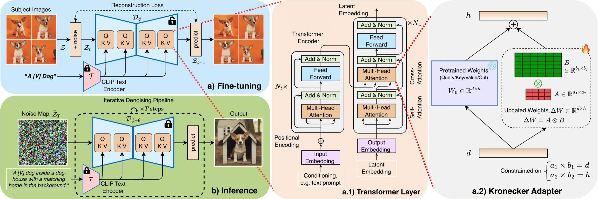

From Text to your dream images: The overview of an Efficient Diffusion Model

The main idea of DiffuseKronA is to leverage the Kronecker product to decompose the weight matrices of the attention layers in the UNet model. Kronecker Product is a matrix multiplication method, that captures structured relationships and pairwise interactions between elements of two matrices as follows
$$ A \otimes B=\left[\begin{array}{ccc}
a_{1,1} B & \cdots & a_{1,a_2} B \\
\vdots & \ddots & \vdots \\
a_{a_1, 1} B & \cdots & a_{a_1, a_2} B
\end{array}\right]$$
In contrast to the low-rank decomposition in LoRA, the Kronecker Adapter in DiffuseKronA offers a higher-rank approximation with less parameter count and greater flexibility, such that \(W_{\text{pre-trained}}+\Delta W = W_{\text{pre-trained}} + (A \otimes B)\), where A and B are the Kronecker factors, and ⊗ denotes the Kronecker product.
Kronecker Adapter reduces the computational cost by using the following equivalent matrix-vector multiplication: \( (A \otimes B) x=\gamma\left(B \eta_{b_2 \times a_2}(x) A^{\top}\right)\), where \(\eta\) is the vectorization operator, and T is the transpose operator.
$$W_{\text{fine-tuned}}=W_{\text{pre-trained}}+\Delta W$$
$$\Delta W^{U} =A^U \otimes {B}^U; \small{U \in {K,Q,V,O}}$$
Unraveling Textual Descriptions into Artistic Creations

For more results, please visit gallery!